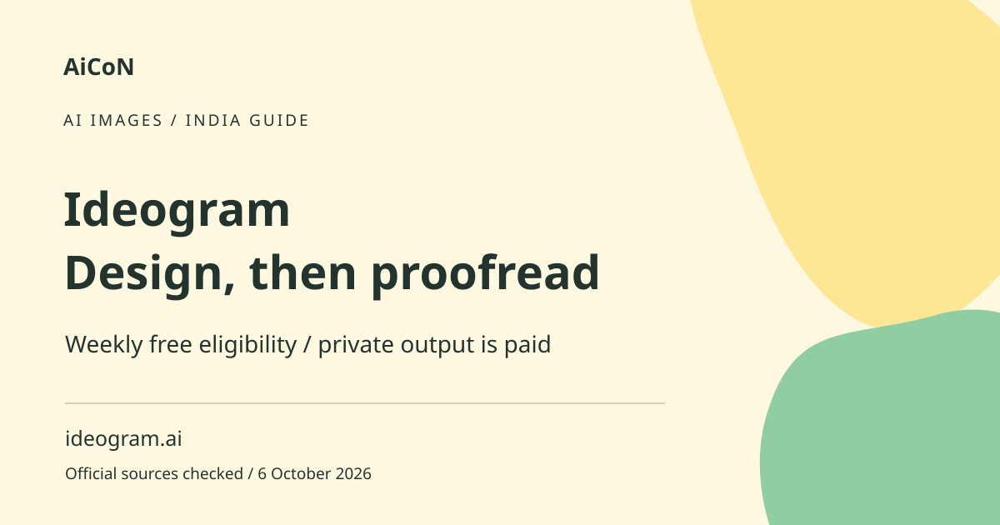

Ideogram: AI images with text, free limits and checks
Ideogram can generate images and lettering from prompts. Eligible free accounts receive weekly credits, but the amount can vary. A readable-looking result still needs proofreading before you print or publish it.

What changed in Ideogram 4.5?
The earlier AiCoN posts covered both image lettering and Ideogram 4.5 editing. The official 4.5 page describes reduced pixel, colour and texture drift across repeated edits. It shows text modification, photo restoration and sketch-to-image examples. These are the vendor's demonstrations, not an independent accuracy test. Reduced drift is not a promise that nothing changes: compare the whole image with the original after each edit.
For an edit, keep an unchanged copy, ask for one specific change, then inspect colours, objects, lettering and crop. Check the selected model and credit cost in your own account. Do not use a generated restoration as evidence of what an old photograph originally showed.
Why use an image generator for lettering?
A poster often combines a visual and a short headline. Image-generation tools can draft that arrangement, but text remains a detail to inspect. A model can miss a letter, repeat a word or create awkward spacing. Product claims about better typography are not a promise that your name, Malayalam phrase or phone number will be correct.
How to use it, step by step
- Open ideogram.ai and read the live Free-plan conditions. Use a non-sensitive test rather than uploading a private client design.
- Write a clear prompt with the subject, layout and intended lettering. Keep the exact headline short and distinguish it from the visual description.
- Check the model, credit cost and generation settings in your account. Do not assume every model or tool is included in Free.
- Review public versus private access. The checked pricing table does not include private generation in Free.
- Generate a draft and inspect it at full size. Read every letter, number and punctuation mark.
- Check composition, crop and image detail. A thumbnail can conceal errors that become obvious in print.
- If the text is wrong, fix it in a suitable editor or regenerate carefully. Repeated attempts can use credits and will not always fix the same problem.
- Before publishing, review any people, trademarks or factual claims in the image and confirm the usage terms for your project.
Current free-credit conditions
The live pricing page lists a $0 Free plan with weekly slow credits for eligible accounts. Its FAQ says eligible free users receive weekly credits when signing in with Google, Apple or Microsoft and the amount may vary. It does not establish one fixed number for everyone. Slow credits concern lower-priority generation; they are not a promise of immediate results.
Paid-plan details changed
The current live browser pricing lists Plus with 2,400 priority credits monthly. A plain page fetch returned an older-looking 1,000-credit table at the same URL. This guide uses the observed browser table rather than silently treating both as the same source version. Verify the allowance in your own account before buying.
With Monthly selected, the browser shows Plus at US$20 per month, approximately ₹1,929 at a sourced reference of ₹96.43 per dollar. With Yearly selected, it states US$180 billed annually, approximately ₹17,357, and the comparison table gives a US$15 monthly equivalent, about ₹1,446. The top price label still shows US$20 in that yearly view, so confirm the actual total rather than relying on the header. These INR estimates exclude taxes and conversion costs.
Public and private generation
Free does not list private generations in the checked comparison. Do not submit unpublished work, sensitive personal photos or confidential client information expecting private output. Paid private features do not automatically satisfy an employer's rules for uploading data. Review current privacy and service terms before using any sensitive reference image.
For posters in Kerala and India
Use AI output as a concept draft, particularly when lettering is important. Verify Malayalam spelling with a fluent reader and check font shapes at the final size. A school notice needs accurate dates and venue information, not only a good-looking layout. For publication, an editor with reliable text tools can be safer for the final words than repeated image generations.
Credits, billing and API are separate
Priority credits generally support faster processing and selected tools. The vendor documentation says reference/edit tools use priority credits on paid plans and Slow credits on Free. API pricing is a separate developer surface, not proof that a website subscription includes API spending. Check plan entitlements, credit consumption and the final rupee charge before upgrading. The pricing FAQ says there are no subscription free trials or discounts.
Check the actual output
Look for unintended symbols, misleading logos, inaccurate representations and cropped lettering. A generated image cannot verify a real event or product feature. Label an illustration when viewers could mistake it for a photograph or evidence. Keep the source prompt and final checked file if you need to explain what was generated.
What changed since the original post?
The original posts covered both typography and Ideogram 4.5 editing. This revision keeps both in one topic, adds verified monthly-versus-annual billing and notes the browser/fetch credit mismatch. Reduced drift remains a vendor claim, not a guarantee that repeated edits leave every detail untouched.
Frequently asked questions
How many free credits do I get?
The current FAQ says the amount may vary for eligible accounts.
Is Free private?
Private generations are not included in the checked Free table.
Are generated words guaranteed correct?
No. Proofread every word and number.
Does Plus still list 1,000 monthly credits?
The live browser comparison lists 2,400. A plain fetch returned 1,000, so verify the current account allowance.
Official sources
Checked 7 October 2026. Expanded from AiCoN short posts delivered 4 and 6 October 2026. Portal screens and rules can change. · INR reference.